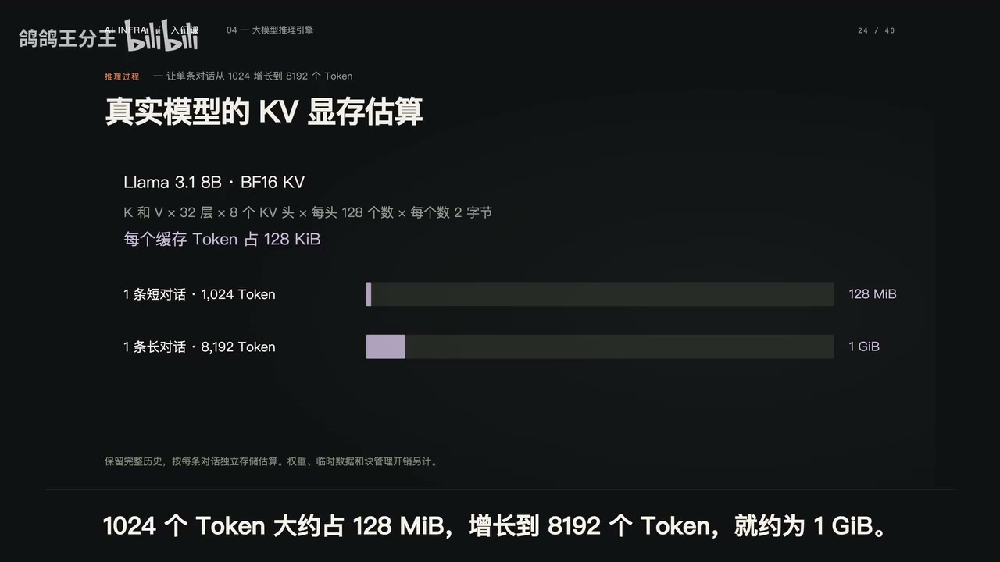

原视频 · 在线回看
点击后联网加载 B 站播放器；本地不下载整段视频。

原视频 · 在线回看
点击后联网加载 B 站播放器；本地不下载整段视频。
来源：【AI Infra 一小时入门】GPU、CUDA、vLLM、PyTorch、KV Cache、Triton、K8s、Ray，一次搞懂大模型背后的技术体系
UP 主：鸽鸽王分王｜时长：01:20:04｜阅读强度：deep
链接：https://www.bilibili.com/video/BV1Fuxf6aEgJ/
我们打开聊天窗口，问“推荐一道晚餐”，有时立刻看到回答，有时对话框却空着好几秒。消息已经送到服务器，模型也早已加载，为什么还要等？假设一张 GPU 留给请求上下文的空间只够四条对话，前面四个人正在生成回答，第五条请求就只能等待。它迟迟没有第一个字，可能根本还没开始模型计算。等某条对话结束、空间归还，调度器才有条件接纳它。
如果另一张卡上已有一份完整模型，而且还有空位，第五条就可以被分过去。模型内容没有改变，变化的是计算资源与请求的安排。AI 基础设施，也就是 AI Infra，要为训练和在线服务提供计算、存储和网络，并组织这些资源，让模型持续工作。我们沿着这条请求，依次看设备怎样执行、权重怎样训练、回答怎样生成，再把部署和监控接回来。
在公司知识库里问“这次出差的报销最晚哪天提交”，制度写的是“返程后十个工作日”，回答却变成“十天内”，就可能算错日期。应用先检索差旅办法，取出相关条款，把问题和条款一起交给模型；模型理解条件、组织回答，应用再提供能回到原文的引用。检索到了正确条款，还需要模型读准“工作日”；模型有能力理解，高峰时也可能因为资源不足而排队。几个问题发生在不同位置，需要分别检查。
上传整本手册后，应用要保证文件处理、检索和引用展示正常；算法评估检查模型在长材料里是否仍能找到条款、理解条件；基础设施关心材料变长后要占多少显存、处理多久、还能同时接待多少人。资料更多并不自动保证答案更准，卡更贵也不能自动修正日期理解。只有先知道哪一步承担什么任务，才不会把所有异常都归结为模型能力。
上线以前，数据先清洗、去重、分词并组织成训练样本，训练程序把样本分批送入设备，反复更新参数；还可以用监督微调，即 SFT，让模型学习示范问答。独立评估检查它处理未见样本的能力。部署前如果做了格式转换或量化，必须再评估最终产物，然后把权重、配置、分词器和版本信息配套交给服务。线上发现新的日期错误，又可以补进评测集，进入下一轮改进。
先不谈模型，只把六个数分别乘二。每一项只依赖自己的输入，没有先后关系，因此可以并行。CPU 擅长通用控制和数据准备，也能通过多核心，或用 SIMD 让一条指令处理多份数据；GPU 更偏向把大量相似工作分给更多线程，可以先把线程看成分别负责一份数据的执行者。矩阵乘法也能拆开：输出左上角来自第一个矩阵第一行与第二个矩阵第一列的对应元素相乘再相加，其他输出位置有各自的行列组合，可以分别计算。
十万个线程不会同时塞进设备。我们提交一段 GPU 上执行的程序，这段程序叫内核。一次内核启动覆盖的线程组成 grid，也叫网格；网格划成 block，也叫线程块。线程块被分到 SM，即流式多处理器，同一块内的线程可以协作。进入 SM 后，线程按 warp 分组；以常见 NVIDIA GPU 为例，一组通常是三十二个线程，同一条指令处理各自的数据。一组等待数据时，可以执行另一组已准备好的线程，减少计算单元空等。
Occupancy 描述驻留 warp 相对于硬件上限的比例，有助于判断设备是否有足够工作隐藏等待，但更高的数字不保证更快。线程占用的寄存器和共享内存会限制同时驻留的数量，速度还取决于数据是否及时到达。Tensor Core 是专门加速矩阵乘加的部件，只有数据类型、矩阵形状和指令满足条件时才能利用。任务很小时，准备数据、启动和传输的开销甚至可能超过计算本身，所以 GPU 不会对任意工作都自动提速。
我们通常写 PyTorch 这样的高层代码。它把数组和参数表示成张量，组织张量运算，再选择适合设备、类型和形状的实现。具体提交给 GPU 执行的设备端程序叫 kernel，即内核。矩阵乘法可调用 cuBLAS，许多深度学习操作可用 cuDNN，多卡交换数据可使用 NCCL；开发者也可以用 CUDA C++ 或 Triton 写专门内核。这里的 Triton 指 GPU 编程语言，与 NVIDIA Triton Inference Server 是不同工具。
用两个六元素数组相加看区别。CUDA C++ 内核根据块编号、块内线程编号和块大小算出下标，负责下标二的线程读取六和四，相加得到十，再写回第三个位置。演示启动三十二个线程，数组却只有六项，多余线程必须先判断边界。Triton 示例每个程序实例处理四个位置，第二组覆盖四到七，用掩码关闭六和七的无效访问。PyTorch 只需表达 C 等于 A 加 B，选择实现、线程分工和边界处理由框架承担。不同写法处在不同抽象层，最终要让有效位置得到相同结果。
这些工作还需要到硬件的通路。CUDA Runtime 提供申请显存、复制数据和启动内核等接口，再通过驱动与操作系统同设备交互；Toolkit 提供编译器等开发工具。程序放进容器以后，宿主机仍要有可用驱动，并开放 GPU 设备访问，容器中的运行库也要兼容。CPU 系统内存、GPU 设备内存、SSD 存储各有位置，多卡通过 PCIe、NVLink 等交换数据，跨服务器可能使用 InfiniBand。看不到 GPU 时，单查 Python 代码会漏掉下面这些环节。
权重先要装进显存，运行时还要放请求缓存、临时张量和其他开销。权重能加载，只说明服务有机会启动；来了多条长对话，剩余空间可能不够继续生成。申请超出容量，可能发生 OOM，即内存不足。引擎可以限制并发或暂缓接收请求，避免运行中才发现放不下。这解释了第五条请求的等待：即使计算单元还有余力，也未必有保存上下文的位置。
容量表示总共能放多少，带宽表示每秒能搬多少。如果计算单元在等数据，增加理论算力无法直接解决等待。GPU 还有更近的存储：多个 SM 可共享 L2 缓存，L1 靠近各自 SM，线程私有寄存器适合保留反复使用的值，块内共享内存让多个线程复用同一小片输入。矩阵乘法经常先把一块数据搬到片上，让它参与多次乘加，再写出结果，减少反复读取显存。
看“矩阵乘法、加偏置、ReLU”这段连续过程。偏置是可学习的调整量，ReLU 把负值变零、正值保留。在数学表达里，它们是不同算子；如果各用一个内核，乘法结果先写回显存，加法再读出，激活又读写一次。能够融合时，一个内核连续完成几个动作，中间值留在寄存器等片上存储，最后再写回。减少中间张量读写和启动次数，才有机会更快；寄存器压力、张量形状和硬件条件也可能让拆开更合适。
计算受限表示数据已就绪，计算单元仍忙不过来，要减少运算或提高执行效率；访存受限表示计算在等数据，要减少搬运、改善复用。FlashAttention 提供一个典型例子：朴素注意力可能先生成巨大的分数矩阵，写回显存，再读出做归一化和后续运算。FlashAttention 把 Q、K、V 分块读到片上，边处理边更新归一化统计量，并修正已有部分结果，不必保存完整分数矩阵。数学目标保持一致，执行顺序与浮点舍入可能不同，实际提速需要测量。
用补字任务看一次训练。输入“天气很”，希望接“晴”，模型起初给“晴”的概率只有 30%，更倾向于其他字。损失函数把预测与答案的差异变成一个数，反向计算求损失对参数的梯度，优化器据此更新参数。示例更新后，“晴”的概率升到 60%，说明对这道题的预测变化了；没见过的题是否更好，需要独立评估。真实语言模型处理的是分词器切出的 token，它可以是字、词或词的一部分，补单字只是简化示意。
PyTorch 将这条链组织为计算图：前向计算从输入与参数得到预测、损失，记录操作之间的依赖；调用 backward 后，沿依赖反向求梯度；优化器再更新参数。最简单的梯度下降中，学习率决定向梯度反方向移动多少，SGD、Adam 等优化器还可能保存历史状态：
推理通常只用训练好的权重做前向计算，不反向求导、不更新参数。不同请求改变当前输入与上下文，同一份权重仍可以重复使用。训练期间还需要梯度和优化器状态，所以训练与推理的显存预算不能只按同一份权重文件估计。
一张卡不够，先问是不够快还是装不下。数据并行让每卡保留完整模型和训练状态、处理不同样本，再同步梯度。张量并行把同一层参数和计算切给多卡，但要交换中间结果。流水线并行把不同层分给不同卡，让不同微批次沿阶段推进。FSDP，即全分片数据并行，把参数、梯度和优化器状态分散保存，需要时通信与重建。它们切分对象不同，费用和适用条件也不同。
数据并行中，假设两卡对同一参数算出本地梯度二和六，All-Reduce 汇总后求平均，得到四。各卡用相同结果更新，副本才能保持一致。NVIDIA 集群常由 NCCL 执行这种集合通信，训练框架再协调分片和交换。此外，调度器要凑齐设备，数据加载器要及时读盘、预处理；任何一环跟不上，GPU 都可能空等。多卡效率依赖计算、网络和数据供给共同配合。
长训练还要定期保存 checkpoint，即检查点，包括权重、优化器状态与训练进度。节点故障后，读取最近一次完整检查点继续；上次保存到故障之间通常要重算。可靠性就在这些具体动作里：能保存完整状态，也能识别和恢复。只保存权重，未必足以接续原来的优化过程。
模型训练好了，用户问“什么是人工智能”。分词器先切成 token，再给片段整数编号；编号用于查嵌入表，取得参与计算的向量。示意里“人工”的编号是一百零六，只对应当前分词结果，换分词器会改变切法和编号。编号负责查表，取得的向量才进入后续网络，不能把示意编号当成文字通用的数字定义。
因果 Transformer 的注意力层将每个位置的表示经不同线性变换得到 Q、K、V。Q 是当前位置发出的查询，与各位置 K 比较得到匹配分数；分数归一化为权重，用来汇总对应 V，当前表示就融入前文。因果遮罩限制当前位置只看自己与更早内容，不能偷看后面的答案。即使训练时整句话一起准备，遮罩仍保留这个限制。
多头注意力并行使用多组 Q、K、V，RoPE 等位置编码纳入位置信息；前馈网络再分别变换各位置向量，残差连接合并变换前后的信息，归一化控制数值尺度。多层计算后，末尾位置交给语言模型输出头，为候选 token 计算未归一化分数 logits。温度改变分布平缓程度，top-k 留下最高的若干候选，top-p 留下累计概率达到阈值的集合，再按策略选出一个 token。新 token 接回输入，才能继续预测下一个。
生成分成两个阶段。Prefill，即预填充，一次处理已有输入位置，建立后续生成的上下文，各位置仍受因果遮罩限制。同一次前向计算各层 K、V，并用末尾分数选出第一个输出。Decode，即逐步解码，把刚选出的 token 再送入模型，为新位置生成状态并预测下一个。第一个输出来自处理输入的那次计算，后续输出再随解码逐轮推进。
长输入增加 prefill 工作，容易推迟首 token；长输出增加 decode 轮数，推迟整段结束。长输入下 prefill 往往更容易受计算能力影响，低并发 decode 则反复读取权重与历史状态，常受显存带宽影响；批次、硬件和模型会改变实际瓶颈。流式输出把已生成内容分段发回，让用户边等边读，一段可能合并多个 token，并不要求逐 token 发送。
第四个位置的 Q 要与前三个位置的 K 匹配，再汇总对应 V。不保存历史结果，就要反复计算它们。因果遮罩保证早先位置看不到后来内容，因此在同一上下文延续中，已经得到的 K、V 可以继续用。把各层历史 K、V 留下来就是 KV Cache。每轮为新位置追加状态，再读取历史缓存，省掉早先位置的重复计算，却仍需要读取历史信息。
标准多头注意力 MHA 中，每个查询头有对应 K、V；GQA 让一组查询头共享一组 K、V，MQA 让全部查询头共享一组。估算时要看真实 KV 头数。每条请求还需要自己的上下文，同一副本中的权重则通常共享。模型只装一份，十二条长对话的缓存依然会分别增长，不能用共享权重推断对话也不再占空间。
以 Llama 3.1 8B 为例：三十二层，每层八个 KV 头，头维度一百二十八，K、V 各一份，BF16 每个数两字节。单 token 的原始 KV 为：
一千零二十四个 token 约占 128 MiB，八千一百九十二个约占 1 GiB；十二条各有这么长历史的对话，原始 KV 约需 12 GiB，尚未算权重、临时空间和管理开销。“还能接几条”因而取决于请求长度，不能只数用户。
小缓存池的例子更直观：总共十八格，A 增长到七格，B 申请五格，C 申请四格，合计十六格，只剩两格。D 至少要三格，就算还有计算余力，也得等别人归还。决定是否接入请求，要同时检查本轮计算预算和可分配 KV 空间，单看 GPU 利用率无法完整判断。
若每条请求一开始就按最长回答预留连续区域，短回答用不到的部分也被占着。PagedAttention 将 KV 按固定大小分块，用块表记录逻辑顺序与物理位置。示意每块存四个 token，A 的逻辑块可在 P2、P5，增长时再领 P1，无需搬到更长连续区域。内核按块表仍能沿正确顺序读取。这里借鉴分页管理，KV 数据依然放在 GPU 显存里。
A、B 从同一空闲池领块，各自保留块表，共用池子不等于共用对话。A 结束以后，没有其他引用、也不需保留的块可以归还，B 的块继续使用，C 再申请释放的空间。按需增长减少提前预留浪费，但末块可能未写满，池子容量也仍有限。分页解决分配问题，没有抹掉每个历史 token 的真实费用。
有了空间，何时计算仍由组批决定。固定批处理里，A 还需两轮、B 还需四轮，新来的 C 可能等整批结束。连续批处理在每轮后重新检查队列和资源，允许先为 C 做 prefill，再加入 decode；A 完成便退出，B 继续。示例中 C 第三轮完成，固定处理却可能第五轮才开始解码、第六轮结束。提前接入仍受 KV、每轮 token 数和延迟目标约束，长输入也会拉长同轮计算。
前缀缓存省的是重复输入。两人附同一本差旅手册，分别问报销与订票，若提示词开头 token 完全一致，前一请求算过的 KV 就有机会复用。引擎要核对模型、token 序列和相关配置，并遵守数据隔离；文字相似不够。共同前缀以后的问题仍需计算，缓存空间紧张也可以淘汰。复用输入状态没有替用户生成新的答案，它只是减少重新处理相同前文的工作。
权重占空间太多时可以考虑量化或模型并行。量化用更少比特近似表示数值，例如把 0.71875 按尺度恢复为约 0.7，减少存储和搬运，同时引入误差。必须检查内核是否支持格式，并重新测效果与速度。模型并行把同一模型分给多卡，减少单卡份额，但带来通信。它们不能与分页缓存互相替代：权重、请求缓存、重复输入和中间读写各有费用。
投机解码处理长回答逐轮生成的成本。小而快的草稿模型先猜几个 token，目标模型在一次前向里检查多个位置。贪心例子中，前两个候选符合目标选择就保留，第三个不一致则从分歧处改用目标结果；随机采样另需接受与修正规则。猜得准确，一次验证可确认多个 token；猜偏时，起草和验证也花时间，所以要测整条链的实际收益。
应用通过 HTTP 调用模型 API，消息体放问题与生成参数，例如最多输出一百二十八个 token、是否流式返回。入口检查格式、权限和额度，合法请求再进入队列；推理调度器挑选本轮请求，worker 调用模型并维护状态，结果沿原连接返回。取消以后，应停止继续调度并回收不再需要的缓存。HTTP 429 表示限流一类拒绝，超时限制请求最多等待多久，两者需要分别记录。
vLLM、SGLang、TensorRT-LLM 等推理引擎组织模型外面的执行工作：本轮谁一起算、准备什么状态、怎样调用底层计算。它们与 API 格式处在不同位置。即使两个服务声称兼容相同接口，切换前也要用真实请求核对模型、参数、流式内容和错误格式，接口相近无法保证行为全部一致。
开发机能跑，换服务器却可能因缺少 FastAPI 依赖而报错。Docker 镜像把代码、依赖与启动配置组织为统一模板，容器是从模板启动的实例；大权重可单独存放，启动时挂载或获取。容器通常共享宿主机内核，GPU 仍需要宿主机驱动和设备访问。镜像让环境更一致，无法自动替代全部硬件条件。
模型注册表记录版本、权重、配置、分词器和评估结果。新副本申请设备、加载模型，先用内部请求预热，再通过 readiness，即就绪检查，才接真实流量；liveness，即存活检查，判断进程是否正常、是否要重启。滚动更新让新副本逐个就绪，旧副本继续处理手头请求，切换后退出。新版出错，先恢复旧副本可用状态，再把流量切回。
Kubernetes 把承载容器的 Pod 放到节点，并持续比较期望副本数与实际数量，少一个就尝试补建，前提是资源足够。Ray 处理程序内部的分布式 task 和 actor：task 适合一次执行，actor 可长期保留状态，例如加载模型后反复接任务。服务内部的推理引擎再安排请求批次。三者的对象分别是 Pod、程序任务和模型请求，所在层次不同。
两卡各放完整模型，形成两个独立副本，入口负载均衡分发请求，各有权重和 KV 池；多卡共同跑一份模型，则只构成一个协作副本，也可以再复制多个这样的副本。已经生成的请求通常留在原副本以沿用缓存。自动伸缩新增副本，还需申请资源、加载和就绪时间；缩容要先停接新请求，等已有回答完成再释放设备。
TTFT 是发送请求到首 token 的时间，包括网络、入口、排队和前向处理；ITL 是相邻 token 到达间隔，TPOT 概括后续 token 平均耗时。示例首 token 在 0.8 秒到达，四个 token 全部结束在 1.1 秒，后续共 0.3 秒，三个间隔平均 0.1 秒。四个 token 之间只有三个间隔，不能拿整段时间随意除以四。首字慢与后续慢需要分开看。
两秒里 A 输出四个 token、B 输出六个，总输出吞吐量为每秒五个 token；完成两条请求，请求吞吐量就是每秒一条。并发统计尚未完成的请求，排队未上 GPU 的 C 也在其中。提高并发可能增加总产量，也可能拉长每人的等待，所以必须把吞吐和延迟一起判断。
模拟负载例子保持模型、硬件与请求长度不变。低负载首 token 延迟一百八十毫秒；增加并发，产量上升，个人等待也略增。并发到二十，产量只再增加每秒二十五个 token，达到二百零五，已有八条排队，TTFT 升到一千三百毫秒，显存占用 94%。拆开后，九百五十毫秒耗在排队。还要继续检查可用 KV 块和每轮 token 预算，单看显存总量无法判明限制；内核变快也不会直接清除已经发生的队列等待。
平均数可能掩盖尾部。P50 为中位延迟，P95、P99 是相应比例请求不超过的延迟位置。SLO 是服务目标，例如请求成功并在八百毫秒内返回首 token。十秒处理一百条，九十五条满足指定目标，则 goodput，即有效吞吐量，为每秒 9.5 条。它把“做了多少”进一步约束为“多少达到了用户需要的标准”。
监控指标显示异常发生的时间和队列、资源变化；日志记录 R-17 当时申请不到 KV 块；trace 把它经过的网关、排队、执行与返回连起来，显示九百五十毫秒耗在哪一段。请求已执行仍慢，再用 profiling 把内核和传输放到同一时间线找原因。开头第五条晚餐请求，由此能解释成具体的缓存与队列问题。等空间释放、它进入 prefill 和 decode，服务才把“西红柿炒蛋”等已生成内容分段送回，结束后再把无需保留的块归还。
训练把数据变成权重，部署把配套产物加载为就绪副本，入口接请求，推理引擎安排批次和缓存，GPU 执行计算，服务返回回答。不同优化针对不同费用：量化减少表示空间，KV Cache 省历史重算，分页减少预留浪费，前缀缓存省共同输入，FlashAttention 减少中间读写，连续组批改善资源衔接。定位等待发生在哪里，才能判断该改哪一项。